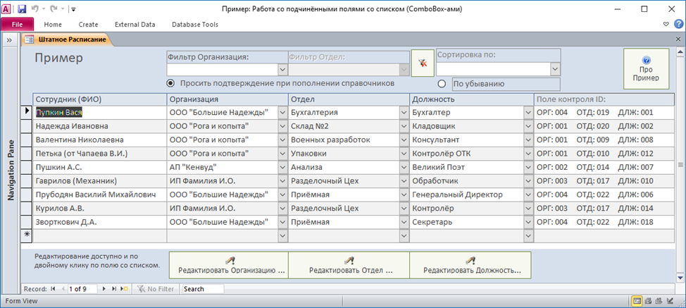

Подчинённые поля со списком (ComboBox-ами) в ленточной (табличной) форме (+ Пример)
Основная идея примера:
Работа со подчинёнными полями со списком (ComboBox-ами) в ленточной форме (обрабатывается 2 уровня подчинённости).
Как всё устроено:
В базе данных хранятся только коды значений списков, а в ленточной форме поля со списком связаны с текстовыми значениями из временной таблицы, таким образом достигается сохранение отображаемых текстовых значений зависимых полей со списком (ComboBox-ов).
Процедура обновления временной таблицы находится в модуле: modForms_UPD - Процедура: RefreshForm_Штатное_Расписание().
При запуске приложения происходит:
1. Сознание временной БД (из стартовой формы «00Connect»)
2. Копирование туда шаблона временной таблицы «atpTableModel»
3. Подключение временной таблицы к приложению как «ztemp_Table»
4. Заполнение временной таблицы данными (вызов при загрузке формы «Штатное_Расписание»)
Примечания:
* В Форме «Штатное_Расписание» столбец «Поле контроля» содержит значения ключей списков записанные в таблицу «Сотрудники».
* В таблице «ztemp_Table» поле «tempVal01» заполняется данными «Название Организации» только в целях дальнейшей сортировки по этому полю.
* Запросы «frmШтатное_Расписание_UPD_01» - "04" сохранены только для наглядности примера и в процедуре RefreshForm_Штатное_Расписание() не задействованы.
Дополнительно реализовано:
* Автоматическое пополнение справочников при вводе в списки новых значений
* Фильтрация формы по двум полям
* Автоподстановка значений полей по данным полей фильтрации, т.е. если отфильтровано название предприятия то оно применяется автоматически.
* Выбор поля сортировки формы
* Перемещение по записям как в таблице (клавишами вверх и вниз).
* Редакция или удаление уже существующих значений справочников (элементов списков).
Подробности:
Обычно, в поле со списком, мы связываем с данными «Ключ» (ID записи), а в поле отображаем текстовое значение по этому ключу.
При использовании подчинённых полей со списком мы меняем его свойство «Источник записей» (RowSource) в зависимости от значения другого поля в форме, но при использовании в ленточной форме, изменение свойства RowSource у одного поля, приводит к изменению его у всех ComboBox-ов ПО ВСЕМ записям формы и ОТОБРАЖАЕМЫЕ текстовые значения полей в других записях «Слетают».
Выход — это хранить в БД кроме Ключа (ID) и его текстового значение для отображения в ленточной (табличной) форме, а это нам не нужно и совсем не экономично.
В примере для хранения текстовых значений ComboBox-ов используется временная таблица «ztemp_Table» и данные в них «развёрнуты» наоборот, т.е.:
* Первое поле списка: Текстовое значение записи из источника строк
* Второе поле списка: Ключ (ID) записи из источника строк
* Кол-во столбцов: 2
* Ширина столбцов поля (допустим): 8cm;0cm
* Связанный столбец: 1
А как же ключ значения?
А Ключ (ID) записываем в нужное нам поле рабочей таблицы по событию «После Обновления» ComboBox-а, вот и вся «механика».
Описание объектов БД:
* Таблица «atpTableModel»: Шаблон временной таблицы
* Таблица «ztemp_Table»: Временная таблица для хранения текстовых значений ComboBox-ов – подключается из временной БД, смотрите модуль «modDBTemp»
* Таблица «Должности»: Справочник должностей сотрудников, подчинённо связан с таблицей «Отделы»
* Таблица «Организации»: Справочник организаций
* Таблица «Отделы»: Справочник отделов организаций, подчинённо связан с таблицей «Организации»
* Таблица «Сотрудники»: Список сотрудников по разным организациям, расписанные по разным отделам и на разных должностях.
* Запрос «frmШтатное_Расписание»: Источник записей для формы «frmШтатное_Расписание», и обратите внимание как там устроена связь между таблицами «Сотрудники» и «ztemp_Table»
* Запросы «frmШтатное_Расписание_UPD_00» - «frmШтатное_Расписание_UPD_04» сохранены только для наглядности примера и нигде, в коде, не задействованы. Служат для тестового заполнения таблицы «ztemp_Table» данными, те-же действия выполняет процедура «RefreshForm_Штатное_Расписание» из модуля «modFormsTempDataUPD»
* Форма «00Background»: Служебная – просто для уборки «мусора» на выходе из приложения.
* Форма «00Connect»: Служебная, стартовая форма приложения, создаёт временную БД и подключает из неё таблицу «ztemp_Table», может быть использована для стартового подключения таблиц другой БД.
* Формы «Должности», «Организации», «Отделы»: Для Редактирования - удаления данных соответствующих справочников.
* Форма «Штатное_Расписание»: Основной пример.
* Форма «Штатное_Расписание_Простая»: Облегчённый пример, просто для упрощения понимания сути примера.
Ключевые моменты из примера:
Для чёткого определения что пользователь вносил изменения в ComboBox-ы создаём переменную для хранения значений до редакции.
Private Type Old_ID_Values 'Описание типа
ID01 As Long 'Для поля [Орг_IDN] = старый ID Организации
ID02 As Long 'Для поля [Отд_IDN]] = старый ID Отдела
ID03 As Long 'Запасной ...
End Type
Private OldVal As Old_ID_Values
Private Sub Form_Current()
'При переходе на запись - запоминаем сарые значения ключевых полей
' Для надёжного определения изменения значений ComboBox-ов
'--------------------------------------------------------------------------
OldVal.ID01 = Nz(Me!Орг_IDN) 'Для поля [Орг_IDN] = ID Организации
OldVal.ID02 = Nz(Me!Отд_IDN) 'Для поля [Отд_IDN] = ID Отдела
'Изменения должности тут отслеживать не нужно т.к. поле не имеет подчинённых ComboBox-ов
'OldVal.ID03 = Nz(Me!Долж_IDN) 'Для поля [Долж_IDN] = ID Должности
End Sub
На открытии формы «Штатное_Расписание_Простая» заполняем временную таблицу текстовыми данными.
Private Sub Form_Open(Cancel As Integer)
'Cобытие: Открытие формы
'--------------------------------------------------------------------------
Dim s As String
'Заполнение-обновление временной таблицы для отображения данных из "Сотрудники"
RefreshTempData_Сотрудники ' Смотри в модуль modFormsTempDataUPD
'--------------------------------------------------------------------------
' Задаём RowSource и некоторые основные свойства ComboBox-Ов для контроля и наглядности
' (не обязательно, уже заданны в конртролах)
'--------------------------------------------------------------------------
' 01 cbОрганизацияНазвание
s = "SELECT ОргНазвание, Организация_ID FROM Организации ORDER BY ОргНазвание;"
Me!cbОрганизацияНазвание.RowSource = s 'Свойство "Источник строк"
Me!cbОрганизацияНазвание.ControlSource = "tempVal01" 'Свойство "Данные (ControlSource)" - Временное поле 01
Me!cbОрганизацияНазвание.ColumnCount = 2 'Кол-во столбцов
Me!cbОрганизацияНазвание.BoundColumn = 1 'Свойство "Присоединенный столбец (BoundColumn)"
Me!cbОрганизацияНазвание.ColumnWidths = "4536;0" 'Ширина столбцов = 8cm;0cm
'Debug.Print Me!cbОрганизацияНазвание.ColumnWidths 'Смотрим установленные значения из контрола
' 02 cbОтделНазвание
s = "SELECT ОтдНазвание, Отдел_ID FROM Отделы WHERE (Организация_IDN=[Forms]![Штатное_Расписание_Простая]![Орг_IDN]) ORDER BY ОтдНазвание;"
Me!cbОтделНазвание.RowSource = s
Me!cbОтделНазвание.ControlSource = "tempVal02" 'Временное поле 02
Me!cbОтделНазвание.ColumnCount = 2
Me!cbОтделНазвание.BoundColumn = 1
Me!cbОтделНазвание.ColumnWidths = "4536;0"
'03 cbДолжностьНазвание
s = "SELECT ДлжНазвание, Должность_ID FROM Должности WHERE (Отдел_IDN=[Forms]![Штатное_Расписание_Простая]![Отд_IDN]) ORDER BY ДлжНазвание;"
Me!cbДолжностьНазвание.RowSource = s
Me!cbДолжностьНазвание.ControlSource = "tempVal03" 'Временное поле 03
Me!cbДолжностьНазвание.ColumnCount = 2
Me!cbДолжностьНазвание.BoundColumn = 1
Me!cbДолжностьНазвание.ColumnWidths = "4536;0"
End Sub
Для корректного отображения списка значений на Получение фокуса подчинёнными ComboBox-ми обновляем их источники строк.
Private Sub cbОтделНазвание_GotFocus()
'Получение фокуса подчинённым ComboBox-ом:
Me!cbОтделНазвание.Requery 'Надо освежить источник строк (по полю [Орг_IDN] тек. записи)
End Sub
Private Sub cbДолжностьНазвание_GotFocus()
'Получение фокуса подчинённым ComboBox-ом:
Me!cbДолжностьНазвание.Requery 'Надо освежить источник строк (по полю [Орг_IDN] тек. записи)
End Sub
При обновлении значения в каждом ComboBox-е сохраняем выбранное ID и обновляем подчинённые контроли.
Private Sub cbОрганизацияНазвание_BeforeUpdate(Cancel As Integer)
'Событие: До Обновления
'--------------------------------------------------------------------
' Проверка выбрано ли заначение в ComboBox через ListIndex
If Me!cbОрганизацияНазвание.ListIndex = -1 Then 'Значение Организации НЕ ВЫБРАНО!
Me!Орг_IDN = 0
Else 'Значение ВЫБРАНО
'Сохраняем ID Организации в поле "Орг_IDN" (таблицы "Сотрудники")
Me!Орг_IDN = Me!cbОрганизацияНазвание.Column(1) 'Значение вророго столбца ID
End If
'Значение выбрано и отличается от старого - Зачистка подчинённых полей
If OldVal.ID01 <> Me!Орг_IDN Then
Me!Отд_IDN = 0
Me!cbОтделНазвание = Null
Me!Долж_IDN = 0
Me!cbДолжностьНазвание = Null
OldVal.ID01 = Me!Орг_IDN 'Запоминаем
End If
End Sub
Private Sub cbОтделНазвание_BeforeUpdate(Cancel As Integer)
'Событие: До Обновления
'--------------------------------------------------------------------
'Проверка выбрано ли значение ComboBox через ListIndex
If Me!cbОтделНазвание.ListIndex = -1 Then 'Значение Отдела НЕ ВЫБРАНО
Me!Отд_IDN = 0
Else 'Значение ВЫБРАНО
'Сохраняем ID Отдела в поле "Отд_IDN" (таблицы "Сотрудники")
Me!Отд_IDN = Me!cbОтделНазвание.Column(1) 'Значение вророго столбца ID
End If
'Значение выбрано и отличается от старого - Зачистка подчинённых полей
If OldVal.ID02 <> Me!Отд_IDN Then
Me!Долж_IDN = 0
Me!cbДолжностьНазвание = Null
OldVal.ID02 = Me!Отд_IDN 'Запоминаем на будущие
End If
End Sub
Private Sub cbДолжностьНазвание_AfterUpdate()
'Событие: После Обновления
'--------------------------------------------------------------------
'Проверка выбрано ли значение ComboBox через ListIndex
If Me!cbДолжностьНазвание.ListIndex = -1 Then 'Значение Отдела НЕ ВЫБРАНО
Me!Долж_IDN = 0
Else 'Значение ВЫБРАНО
'Сохраняем ID Должности в поле "Долж_IDN" (таблицы "Сотрудники")
Me!Долж_IDN = Me!cbДолжностьНазвание.Column(1) 'Значение вророго столбца ID
End If
End Sub
Вот и весь необходимый минимум, остальные «фишки» смотрите в форме «Штатное_Расписание».


MSA-2003 + MSA-2007 ( 363 kB) Пример